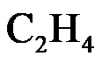
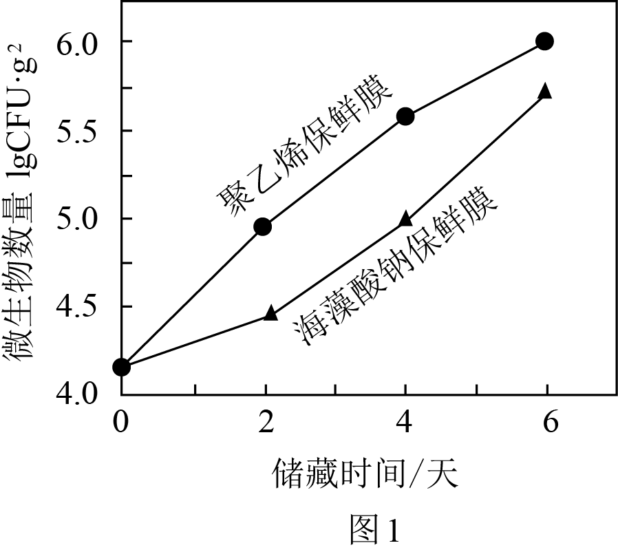

2023年北京市中考化学真题 · 科普阅读 第29题
29. 阅读下面科普短文
保鲜膜通常有适度的透氧性和不透湿性，能调节被保鲜品周围 和
和 的含量，从而起到保鲜作用
的含量，从而起到保鲜作用
目前市场上常见的保鲜膜主要是聚乙烯保鲜膜，它是以石海中提炼出的乙烯(

)为主要原料制成的，不易降解，用从海藻中提取的海藻酸钠制成的保鲜膜具有良好的可降解性。在可降解测试中，海藻酸钠保鲜膜20天后基本降解完毕，而聚乙烯保鲜膜基本没有变化科研人员以环境下储藏的鲜切西瓜为样品，测试了海藻酸钠保鲜膜对西瓜品质的影响。研究其保鲜效果。其中，用海藻酸钠保鲜膜和聚乙烯保鲜膜分别包裹的西瓜，储藏期间微生物生长的情况如图(纵坐标数值越大，代表微生物数量越多)；用海藻酸钠保鲜膜包裹的西瓜每天减少的质量见表。

表西瓜每天减少的质量
测定时间 | 第1天 | 第2天 | 第3天 | 第4天 | 第5天 | 第6天 |
质量/g | 3.5 | 2.7 | 3.1 | 2 4 4 | 2.5 | 1.5 |
目前，科研人员还在致力于海藻酸钠保鲜膜性能改进的研究，以推进其在食品保鲜中的实际应用。
(原文作者王琦琦、康顺等，有删改)
依据文章内容回答下列问题。
（1）中C、H原子的个数比为_____。
（2）海藻酸钠由钠、碳、氢、氧四种元素组成，其中属于金属元素的是_____。
（3）判断下列说法是否正确(填“对”或“错”)
①保鲜膜通常有适度的透氧性和不透湿性。_____
②海藻酸钠保鲜膜比聚乙烯保鲜膜易降解。_____
（4）表1中，“3.5”表示_____。
（5）微生物的滋生是引起水果腐烂变质的一个重要原因。图1数据可作为海藻酸钠保鲜膜的保鲜效果优于聚乙烯保鲜膜的证据之一，理由是_____。
【生产实际分析】